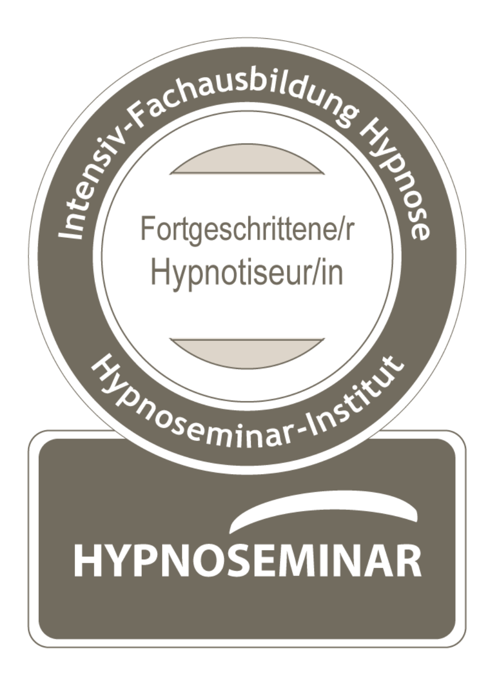

„Im Gegensatz zur klassischen Hypnose, die oft mit Suggestionen arbeitet, setzt die Auflösende Hypnose auf einen therapeutischen Verarbeitungsprozess. Wir überdecken das Problem nicht, sondern wir schauen hin. Gemeinsam identifizieren wir verdrängte Emotionen und verarbeiten diese direkt im Unterbewusstsein. Ziel ist es, gestaute Gefühle wie Angst, Trauer oder Wut spürbar abfließen zu lassen, damit echte Erleichterung entstehen kann."

„Die Methode wurde von dem Arzt und Hypnotiseur Floris Weber entwickelt und ist sehr praxisorientiert. Sie basiert auf der Erkenntnis, dass viele psychische und psychosomatische Beschwerden durch ungelöste emotionale Konflikte verursacht werden. In unseren Sitzungen nutzen wir die Trance als sicheren Raum, um diese Blockaden effizient und nachhaltig aufzulösen."
Die Auflösende Hypnose nach Floris Weber unterscheidet sich von anderen hypnotherapeutischen Verfahren durch ihre emotionale Fokussierung. Anstatt Suggestionen zu nutzen, um Symptome zu überlagern, arbeiten wir daran, die zugrunde liegenden emotionalen Ursachen zu verstehen und zu heilen.
„Bei der Auflösenden Hypnose nach Floris Weber stehen Sie als Mensch mit Ihrer individuellen Geschichte und auch Ihrer individuellen Selbstheilungskraft im Vordergrund. Hypnose-Skripte und Schablonen wende ich persönlich nicht an, weil man mit ihrer Verwendung nach meiner Auffassung das Potential der Hypnose nicht voll ausschöpfen kann."